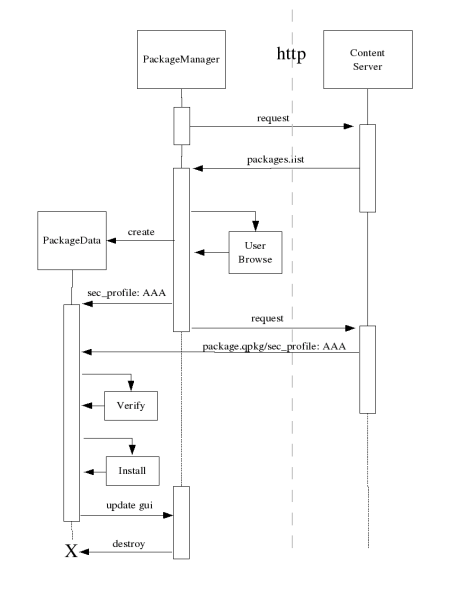
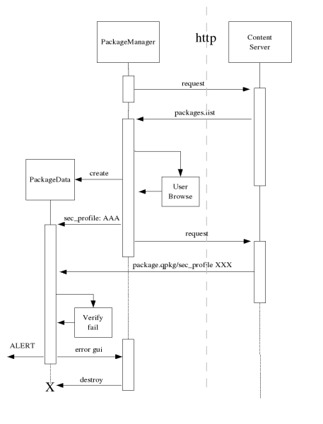

|
Home · All Namespaces · All Classes · Grouped Classes · Modules · Functions | |
The process of downloading and installing packages is depicted in the sequence diagrams below. It is instructive to compare this to the process used by the Java Midlet framework Midlet Download protocols
Successful download and installation of a package.

Failed download and installation of a package. In this case the Safe Execution Environment profiles declared in the packages.list entry, and accepted by the user at browse time did not match those requested in the downloaded package.

Since the package distribution normally involves extracting the SXE profile along with other package summary information directly from the package file at the time it is mounted on the content providers server, such a failure is exceptional. It means either that a deliberate attempt was made to gain access privileges above those accepted by the user; or that the server and/or the package is corrupted.
| Copyright © 2009 Trolltech | Trademarks | Qt Extended 4.4.3 |